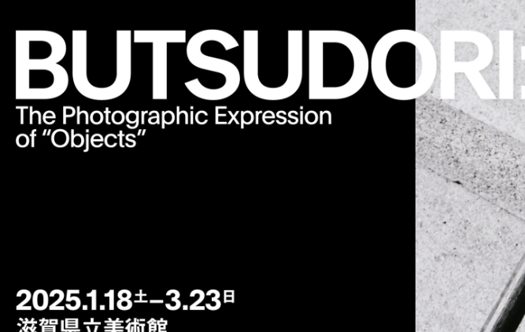

いろいろ考えた滋賀県美
2025/03/15
久しぶりに美術館に行きました。内容は物撮り写真についての展示でした。
面白かったです。そう、面白かったんですけど、、、ジャンルが写真ということもあり色々と考えちゃいました。
考えたことを完全に言語化して説明するのがブログっぽいですが、なんか違うかな〜と思ったので短文でポツポツ挙げていく感じにします。
決して言語化をサボったわけじゃないので、！(とは言っておきます)
それでは、いきます。
・ とてもパズル的な感覚だなぁ
え？なんだこれって？
これくらいの呟きレベルですよ今回は。
さくさくいきましょ〜
・ パズル的な、の逆はなんだろう
・ お皿かどんぶりかみたいな話？
・ 面白かった、けど面白いということはオモシロくなかったのでは？
・ 必然性に縁取られている
・ 対話だ。必然性の割合依存すぎる
・ だとすると写真には可逆性があるんじゃないか、？
はい、自分で見返してても意味わかんないですねこれ。
何かを鑑賞するときは常に考察をする癖があるのですが今回は特にですね。
これから写真をどう続けていくかを考えるような時期でもあったのでこんな感じになっちゃいました。
なんだかんだ鑑賞って結局は自分がどう世界を認識するのかみたいな話に帰着しがちじゃないですか？そんなことない、、ですか？
とにかく！今更ですが面白い気づきがあったお出かけでした。
「BUTSUDORI モノをめぐる写真表現」は今月下旬まで滋賀県立美術館でやってます。興味がない人は是非。